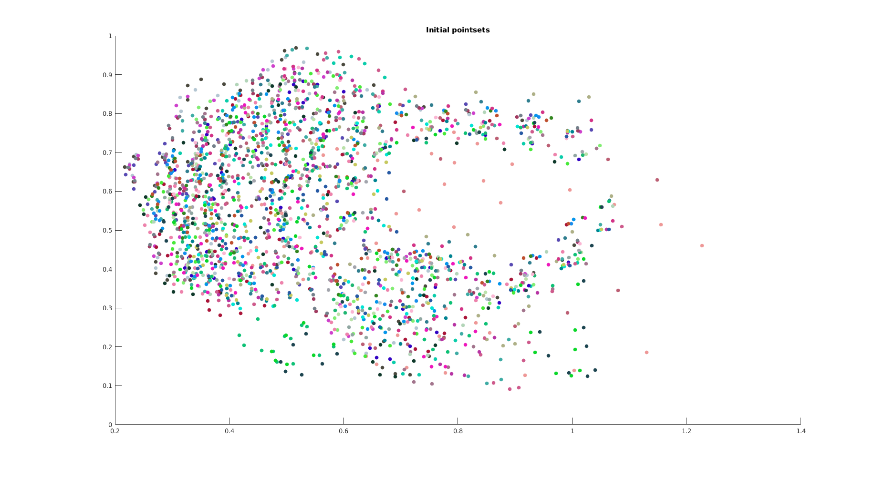
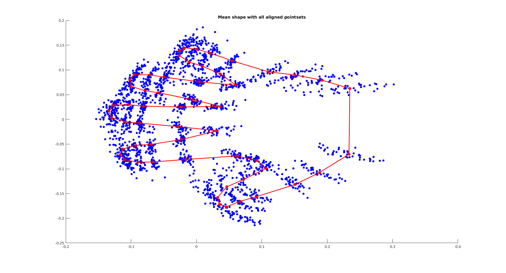
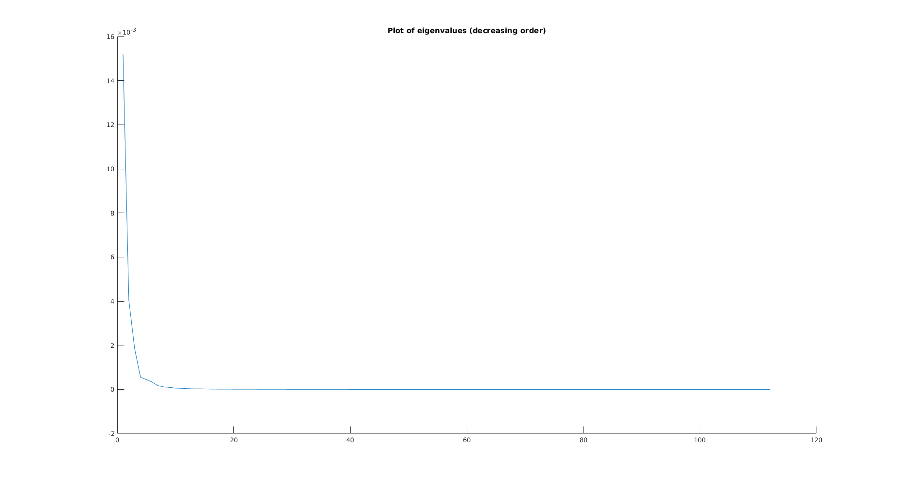
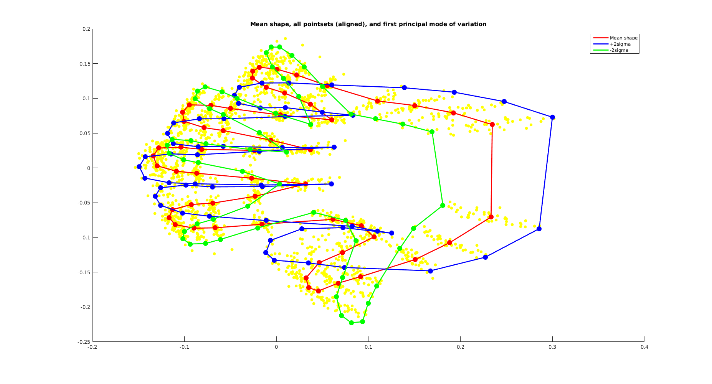

clc; clear; close all;
load('../../data/hands2D.mat');
[dims, locs, num_shapes] = size(shapes);
m_ = repmat(mean(shapes, 2), [1, locs, 1]);
n_shapes = shapes - m_;
for i=1:num_shapes,
s = n_shapes(:,:,i);
n_shapes(:,:,i) = n_shapes(:,:,i)/norm(s(:));
end
E = eye(dims);
E(dims,dims)=-1;
mean_shape = n_shapes(:, : ,1);
num_iters = 5;
for i=1:num_iters,
for j=1:num_shapes,
y = n_shapes(:,:,j);
[U, S, V] = svd(mean_shape*y');
if (det(V*U') > 0),
R = V*U';
else
R = V*E*U';
end;
n_shapes(:,:,j) = R'*y;
end
mean_shape = squeeze(mean(n_shapes, 3));
s = norm(mean_shape(:));
mean_shape = mean_shape/s;
error = n_shapes;
for k=1:num_shapes,
error(:,:,k) = error(:,:,k) - mean_shape;
end
end
hold on;
title('Initial pointsets');
for i=1:num_shapes,
scatter(shapes(1,:,i), shapes(2,:,i), [], rand(1,3), 'filled');
end
hold off;
figure;
hold on;
title('Mean shape with all aligned pointsets');
for i=1:num_shapes,
scatter(n_shapes(1,:,i), n_shapes(2,:,i), [], [0, 0, 1], 'filled');
end
scatter(mean_shape(1,:), mean_shape(2,:), 60, [1, 0, 0], 'filled');
line([mean_shape(1,:), mean_shape(1,1)], [mean_shape(2,:), mean_shape(2,1)], 'Color', 'red', 'LineWidth', 2);
hold off;
X = zeros(dims*locs, num_shapes);
for i=1:num_shapes,
t = n_shapes(:, :, i);
X(:,i) = t(:);
end
X = cov(X');
[V, D] = eig(X);
[D, I] = sort(diag(D), 'descend');
V = V(:, I);
figure;
hold on;
title('Plot of eigenvalues (decreasing order)');
plot(D);
hold off;
n1_shape = mean_shape + 2*sqrt(D(1))*reshape(V(:,1), dims, locs);
n2_shape = mean_shape - 2*sqrt(D(1))*reshape(V(:,1), dims, locs);
figure;
hold on;
title('Mean shape, all pointsets (aligned), and first principal mode of variation');
for i=1:num_shapes,
scatter(n_shapes(1,:,i), n_shapes(2,:,i), [], [1, 1, 0], 'filled');
end
scatter(mean_shape(1,:), mean_shape(2,:), 100, [1, 0, 0], 'filled');
h1 = line([mean_shape(1,:), mean_shape(1,1)], [mean_shape(2,:), mean_shape(2,1)], 'Color', 'red', 'LineWidth', 2);
scatter(n1_shape(1,:), n1_shape(2,:), 100, [0, 0, 1], 'filled');
h2 = line([n1_shape(1,:), n1_shape(1,1)], [n1_shape(2,:), n1_shape(2,1)], 'Color', 'blue', 'LineWidth', 2);
scatter(n2_shape(1,:), n2_shape(2,:), 100, [0, 1, 0], 'filled');
h3 = line([n2_shape(1,:), n2_shape(1,1)], [n2_shape(2,:), n2_shape(2,1)], 'Color', 'green', 'LineWidth', 2);
legend([h1, h2, h3], {'Mean shape', '+2sigma', '-2sigma'});
hold off;
   